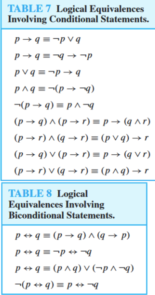
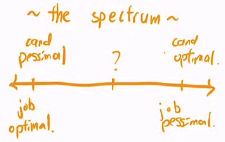
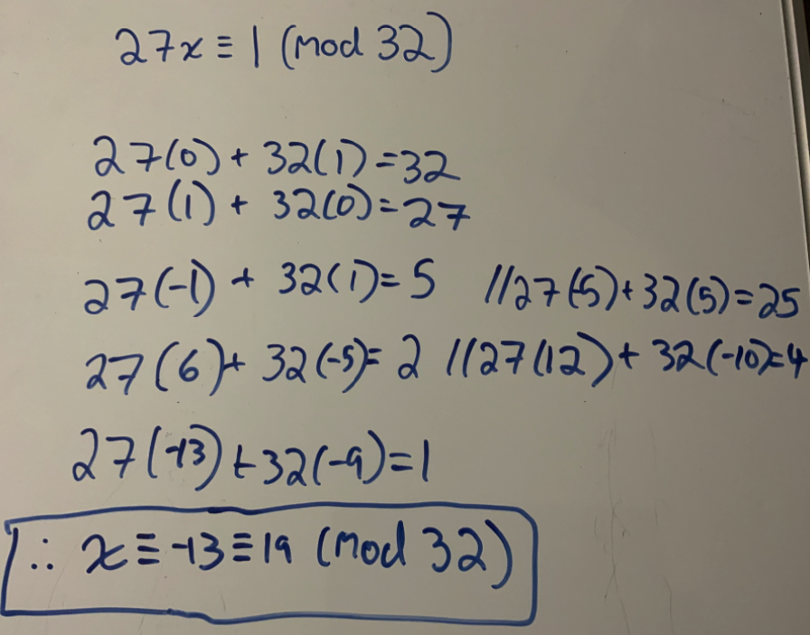
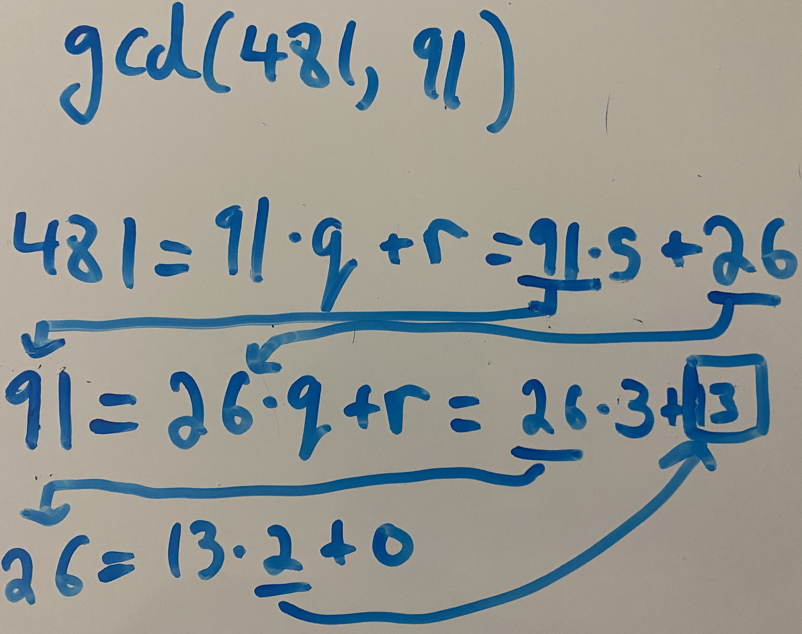
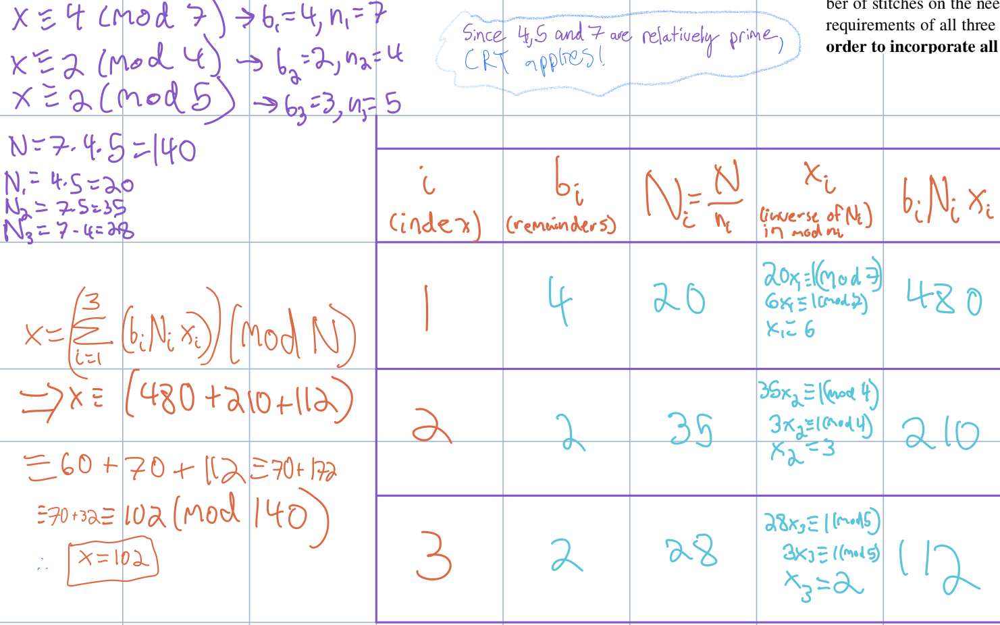
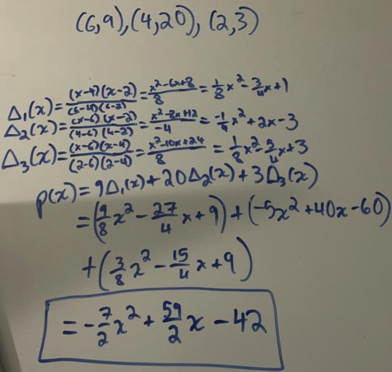
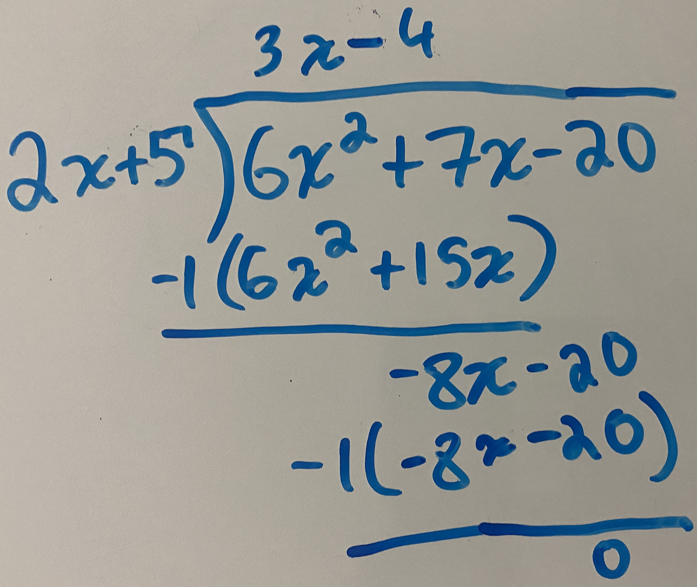

| Name | Definition | No repeat edges | No repeat vertices | Same 1st + last node | Visits every edge once | Visits every vertex once | |
|---|---|---|---|---|---|---|---|
| Simple Path | Sequence of connected edges with distinct vertices | X | X | ||||
| Cycle (or circuit) | Simple path with v1 = vk; all cycles are tours | X | X | X | |||
| Walk | any sequence of connected edges: $\{v_1, v_2\}, \{v_2, v_3\}, \{v_3, v_4\}\ldots$ | ||||||
| Tour | walk that starts and ends at same node | X | X | ||||
| Eulerian Walk | connected and at most two odd degree vertices | X | X | ||||
| Eulerian Tour | iff connected and every vertex has even degree (allows isolated vertices) | X | X | X | |||
| Hamiltonian Walk | contains |V|-1 edges | X | X | X | |||
| Hamiltonian Tour | all hypercubes have one, contains |V| edges | X | X | X | X |




